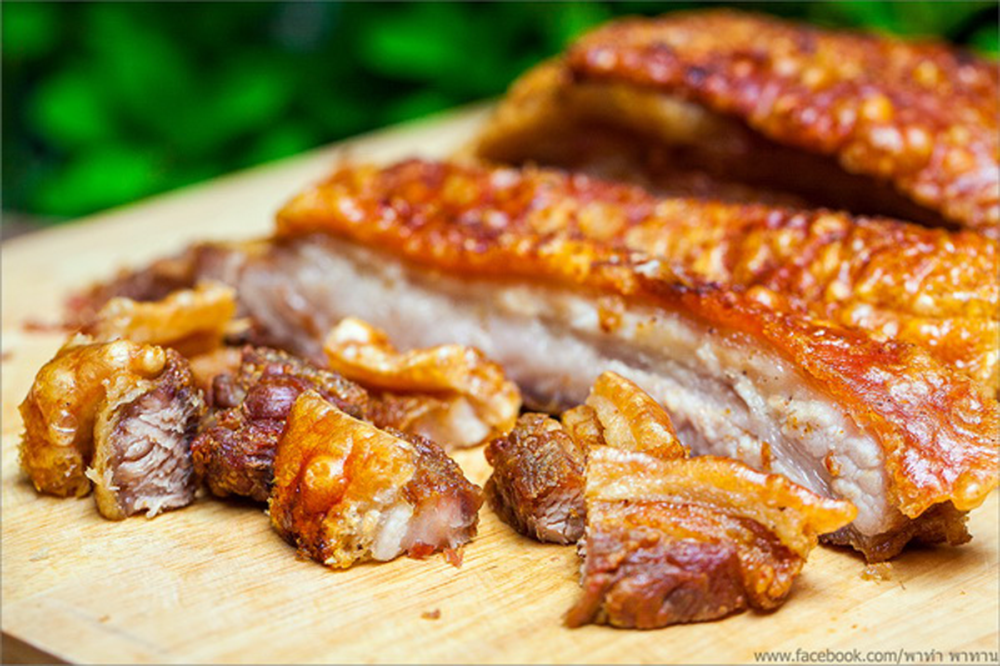

หมูกรอบ


- หมูสามชั้น 1 ชิ้น
- หัวหอมซอย 1 หัว
- กระเทียมซอย 2 กลีบ
- พริกไทย
ส่วนผสม
- หมักหมู โดยน้ำส่วนผสมทั้งหมดมาหมักทิ้งไว้ แล้วใส่เกลือ คลุกๆให้เข้ากัน พักในช่องฟรีทสัก 30 นาที
- ตั้งน้ำมันให้ร้อน
- ใส่หมูลงไปทีละชิ้น
- รอหมูอีกข้างเริ่มเหลือง แล้วถึงพลิกกลับอีกด้าน
- เมื่ออีกด้านเริ่มเหลืองก็เขี่ยไปตั้งขอบๆ เพื่อพักน้ำมัน แล้วใส่ชิ้นถัดไปลงไป
วิธีทำ
เวลาเตรียมส่วนผสม: 45 นาที เวลาปรุงอาหาร: 35 นาทีขอบคุณข้อมูลสูตรอาหารนี้จาก